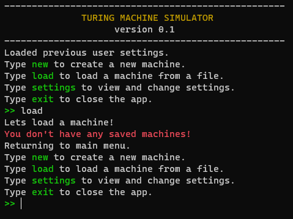
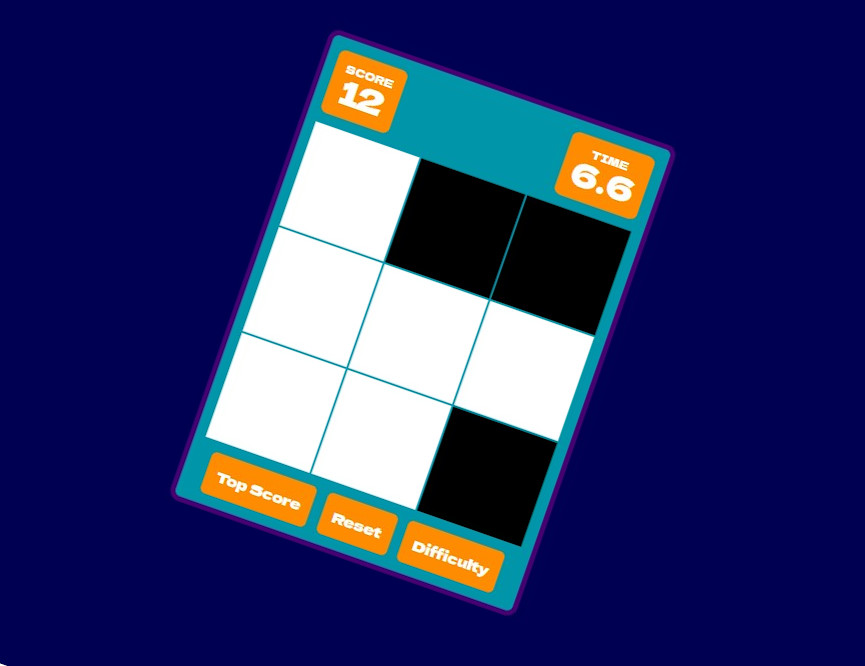
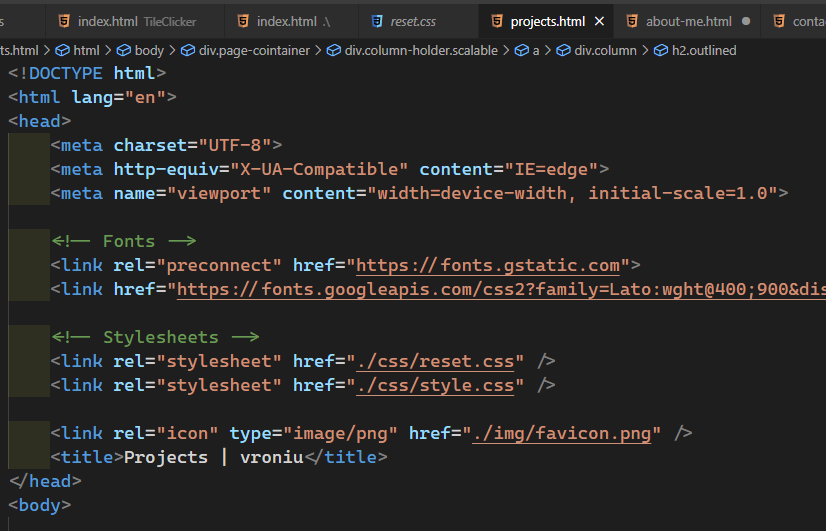

Turing Machine Simulator
A Turing Machine simulator that runs single-tape machines. I originally used it to pass my classes in university and decided to polish it and release it. It suports exporting and loading machines into .json files.
Technologies used: Java w/ Maven
Click on the column to go to the GitHub repo.

TileClicker
A simple game where you have to tap black tiles as fast as possible. It's made with JavaScript.
Click on the column to try it out!

This page!
This is my homepage, I made it to practise basic HTML and CSS.
Click on the column to check out the source code on GitHub.

TODO App
Currently in progress - a simple CRUD app, using Symfony for backend and Vue.js for the frontend.
Click on the column to go to the GitHub repo.